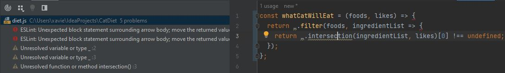
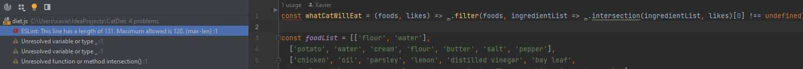

Coding is hard, there’s no one way to do everything, and even when you find a solution, there are always things that bypass that. If you solve an algorithm for all x > 1, what happens at 1? These are called edge cases, and they translate to anything you can think of, including our lovely little coding standards.
My experience with utilizing coding standards has been interesting. I like the idea of it, and I fully understand its purpose, and utilize them in my free time for the most part. After becoming a half-decent programmer, I’ve looked at other people’s code, and, no offense to them, but if they don’t follow the coding standards, it looks like a huge mess.
Tabs misplaced everywhere, Curly braces placed wherever the hell they feel like it, lines that you have to scroll off the page to see, and many simple formatting issues that take away from the readability of the code. I’m not saying that you should follow one set of rules, because there isn’t one; When you’re coding in Java, you’re not supposed to declare multiple variables on one line, but in C, that’s the standard. When you’re coding for a big company, you have to follow their coding standard, but their coding standard might be different from one at school.
One of the biggest debates in programming is literally about a coding standard, where to put the opening curly brace. Many people vehemently claim it’s in the same line as the if or else or function, and others vehemently claim that it looks better if you start it on a new line. Now, I don’t know which of them is right, but I do know that those types of people complain to high hell when put in a situation where they have to do it the way they don’t like.
If you have a good IDE, that problem can be fixed easily, IntelliJ can automatically reformat the code to follow the coding standard you like, whether it be 2 spaces instead of 4, or the whole curly braces debate. Unfortunately, that’s not the end-all be-all of the debate though, programmers still have to learn how to code in the coding style, or someone else is going to have to go into all of their code and reformat it all. Coding standards make it so that no one has to clean up after you, even if it does sometimes disregard your preferences.
During this class, trying to follow the coding standard has been absolute hell. I don’t know if it’s just ESlint, but I’ve had so many problems that are either catch-22s or completely unsolvable. My favorite example is when I was coding a lambda function that had an underscore function with a lambda function that had an underscore function with a lambda function. I wanted to spread it all out, even though each function only had one line inside of it, I felt it was better, and that people could see what was happening that way. ESlint disagreed and decided to yell at me, so I decided to listen to it. It collapsed the whole thing into one huge line, and then yelled at me for the line being too long…
It created a problem, by fixing a problem… 
or

Needless to say, I suppressed the error.
When things like that happen during a WOD, it becomes 10 times worse, you have to think fast, and so you don’t exactly have the time to fiddle around with new lines to make ESlint happy.
Because of this my opinion of coding standards dropped a little bit. Especially since these are all errors that can easily be confused as syntax errors, I think it could be easy for people to think the words of ESlint are comparable to the words of God; you have to follow it or you get smitten by the compiler. This normally wouldn’t be the worst thing in the world, but in terms of adaptability, it’s better to not get too attached to one coding standard. Obviously this is kind of a non-issue for most of us in college, because once we go to a new class, we start learning a new language, or using a different coding standard. This way we develop the adaptability we need, but either way, I don’t think they necessarily help us learn to code, they might help us learn to organize, but it could actually be detrimental to follow only one coding standard for the entirety of your coding career.
Tying it back to the title, the problems with ESlint that I described were likely due to edge cases. They never expected someone to have 4 nested arrow functions, all with exactly one line of code inside of it. I think that these edge cases, as well as the lack of adaptability inherently built into coding standards, are the only two things dragging them down. However, that doesn’t ruin their usefulness; they still have plenty of usability, as long as you understand why they work as well as they do. Just like any learning tool you use, if you don’t understand how to properly use it, it probably won’t help you.